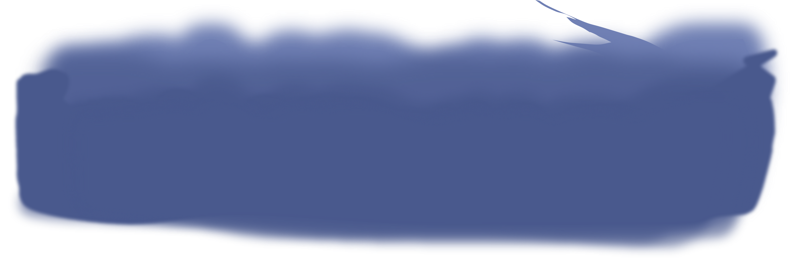
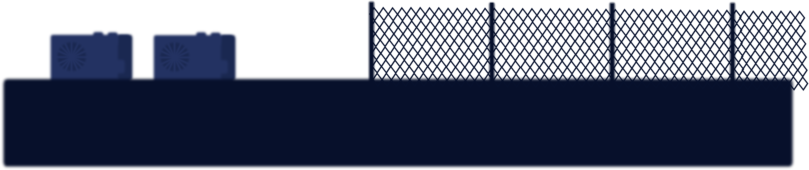

Skill
Gambar digital (PowerPoint, Krita, Ms Paint), animasi (Pivot Animaator, Krita, Powerpoint)
Hobi?
Sebagai individu remaja-dewasa, saya pengembar dengan banyak hal seperti menggambar, bikin animasi, 3D art, sepertinya ada banyak hobi yang ku miliki namun bagaimana saya mendapatkan seluruh hobi-hobi ini?
Gambar Tradisional
Singkatnya, saya mulai menggambar pada masa TK karena ketika saya melihat sesuatu yang menurut ku menarik, maka munculah rasa ingin tahu bagaimana rasanya bisa menggambar objek-objek yang menarik tersebut, biasanya saya suka menggambar mobil, pemandangan alam, kemudian ke kota, tapi selain menggambar saya dapat juga menggambar komik series diriku sendiri dalam bentuk stickman dan membuat banyak cerita.
Gambar Digital
namun kalau sekarang saya beralih ke digital, ini bermula ketika suatu hari pada masa SMA saya mengalami gangguan terhadap pengumpulan tugas video karena laptop saya terlalu lambat untuk export videonya, dan kebetulan guru saya tahu banyak dengan aplikasi-aplikasi microsoft seperti Excel, Word, dan Power Point. Jadi ketika guru ku melihat masalah yang saya alami, Dibukalah software PowerPoint lalu Save As dengan file format mp4, dan sekilas saya baru tahu ternyata simpan file itu ada format, dan dari format terseut memuat ku penasaran apakah saya bisa gambar di PowerPoint? dan tidak lama kemudian saya menyadari ternyata PowerPoint memang bisa bikin gambar. Lucunya, ada banyak software gambar lain yang bisa saya pakai, namun saya tidak memiliki pensil digital, jadi cuman mouse dan Powerpoint adalah software yang cocok untuk ku.
Animasi
Ini bermula ketika saya kelas 4 SD, suatu hari kakak saya di lab komputer sekolah menunjukan software animasi “Pivot Animator”, dan sejak itu saya sering bikin animasi setiap hari, yang terasa lebih menyenangkan seperti main game, seiring bertahun-tahun, animasi saya mulai berkembang dan sekarang saya merujuk untuk mencoba software lain yang lebih advanced,
SOFTWARE
- Microsoft PowerPoint -
- Canva -
- Krita -
- GIMP -

